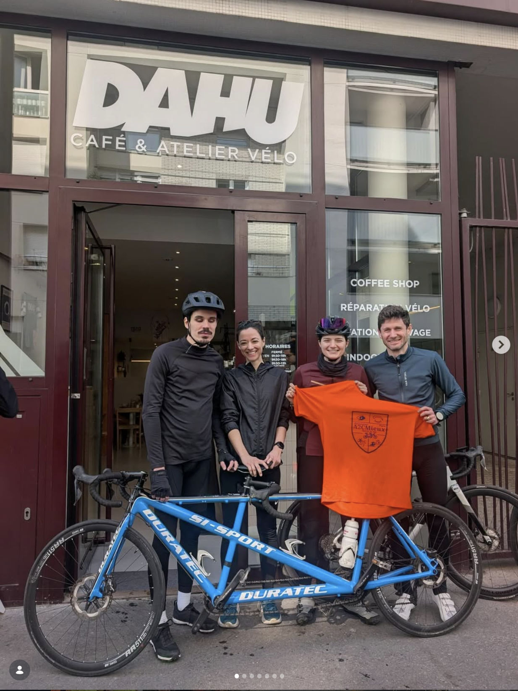

Initiations découvertes
Des séances d'initiation pour découvrir chacun des sports que nous pratiquons.
Accueil › Nos missions
Permettre à des personnes atteintes de déficience visuelle de faire du sport au travers d'un Duo Sportif, formé de manière harmonieuse et adaptée au niveau de chacun·e.

Un accompagnement sur mesure
Un Duo Sportif est composé d'un guide et d'une personne déficiente visuelle. Nous prêtons une attention particulière aux binômes : chaque guide est formé et accompagné, et nous disposons de coachs professionnels pour certaines de nos activités.
A2CMieux est ouvert à toutes et à tous (plus de 50% d'adhérentes), adolescents ou adultes, débutants ou sportifs confirmés, pratiquants réguliers ou non. Vous avez un projet ? Nous mettrons tout en œuvre pour le réaliser.
Ce que nous proposons
Des séances d'initiation pour découvrir chacun des sports que nous pratiquons.
Une pratique axée loisir, de manière occasionnelle ou régulière, selon vos envies.
Une aide à la reprise d'une activité sportive, en douceur et en confiance.
Des entraînements réguliers pour progresser et se dépasser.
La préparation et la participation aux compétitions sportives.
Des actions avec l'Institut National des Jeunes Aveugles (INJA) pour inciter les jeunes à faire du sport.
Que vous soyez déficient·e visuel·le, guide bénévole ou simplement motivé·e, il y a une place pour vous chez A2CMieux. Le sport, ça se vit mieux à deux !